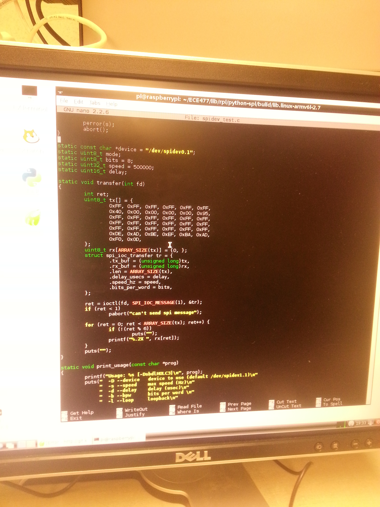

January 15, 2014 (2 hour): Met as a team during lab to discuss preliminary project proposal.
January 15, 2014 (2.5 hours): Met as a team to begin writing preliminary project proposal. I did a lot of research on existing patents and designs.
January 18, 2014 (3 hours): Edited and completed layout for team website.
WEEK 01 SUMMARY Accomplishments: Submitted preliminary project proposal and got website up and running. Weekly Work Total: 8.5 hours Project Work Total: 8.5 hours
Week 02
January 25, 2014 (1 hour): Finished cleaning up the final proposal and design schedule. All homeworks have been completed through a Google Doc form to ensure all revisions can be captured.
WEEK 02 SUMMARY Accomplishments: Submitted final project proposal Weekly Work Total: 1 hours Project Work Total: 9.5 hours
Week 03
January 28, 2014 (2 hours): Completed Eagle tutorials and schematic design homework. This will be crucial to know and understand once the PCB board is being prototyped.
January 29, 2014 (2.5 hours): Met as a team to begin prototying the Every1 DJ. Spent a few hours deciding what will be implemented and the main design aspects. It was decided that a Raspberry Pi will be used to interface with the web application.
February 1, 2014 (1 hour): Updated Team 2 website with the PSSC's and links to the completed homeworks.
WEEK 03 SUMMARY Accomplishments: Keeping website updated and finalizing project contraints so that parts can get ordered in a timely fashion Weekly Work Total: 5.5 hours Project Work Total: 15 hours
Week 04
February 2, 2014 (1 hour): Created the Google Doc for Homework 3. Did priliminary research for LED's, LCD's and microcontrollers.
February 4, 2014 (3 hours): Finialized the design contraints for the microcontoller. Decided that around 100 I/O pins will be used for the LED's, and a shift register will not be needed to expand the I/O pins. SPI interfacing and ADC is also important to interface with the Raspberry Pi. The Every1 DJ will utilize a DSPIC33EP512MU814-I/PH-ND microntroller.
Realized that heat dissipation may become an issue if all components are housed within the same unit. The system may have to utilize a fan to keep all parts cool
Completed parts of Homework 3, including the introduction, some design contraints, interface requirements, packaging contraints, microcontroller selection and block diagram.
Below is the block diagram for our design:
February 5, 2014(1.5 hour): Researched implementations of this design to see what has been used in the past. This includes packing selection, motor use, etc. The key is to determine how the disco ball and lights will be housed (i.e. a plexiglass sphere with LED's inside, a mirrored discoball with LED's on the outside, etc). Once this is finialized, parts can be ordered.
February 6, 2014(1.5 hour): A final design was determined. LED's will be housed externally from the disco ball. This way there will be no worries of wires being tangeled. The mechanical design will mimic the design from this video: http://www.youtube.com/watch?v=Qnm_IXD6tNM .
Because the mechanical design changed, and only 4 LED's will be used, the microcontroller constraints changed a little. It was determined by the team that the microcontroller needed the following properties:
1. Two ADC's for audio sample
2. Around 20-40 I/O pins for LED's, LCD, push buttons
3. Serial peripheral interfacing to interface with the Raspberry Pi
From these specifications, and the availability of test boards in lab, it was detemined the the PIC18F87J11 would suit the projects needs the best. This device has 68 I/O pins which gives the team enough leeway incase design changes happen throughout the project. This microcontroller is also available for checkout in lab, which makes inital prototyping simpler.
WEEK 04 SUMMARY Accomplishments: Most parts selected and a final design selected. Weekly Work Total: 7 hours Project Work Total: 22 hours
Week 05
February 12, 2014 (1 hour): Checked out the PIC microcontroller from Joe during mandatory lab session. Began downloading the software programs to begin programming the micro. Also, began looking into ordering parts for the design.
February 13, 2014 (1 hour): Completed the commercial product packaging comparison for Homework 4. This was done by researching Walmart and Target for party lighting systems. Many of the commerical products out today have the same foundation as the Every1 DJ, but none utilize a web application for song voting.
WEEK 05 SUMMARY Accomplishments: Weekly Work Total: 2 hours Project Work Total: 24 hours
Week 06
February 16, 2014 (1 hour): Began working on the pinout for the microcontroller. This has not proven very challenging yet because a lot of documentation is available for the PIC microcontroller. The difficulty is making sure all parts are connected correctly and all parts are accounted for.
February 19, 2014 (2.5 hours): Began working the PIC18 J-Series development board. Got it connected to the PC, and loaded code onto the chip. Got the LED's to turn on and off!
February 21, 2014 (3 hours): Completed homework 5. Now there is a basic concept of how information will travel through all different parts.
February 22, 2014 (3 hours): Began working on SPI on the microcontroller. There are many examples online utilizing the LCD on the development board. These examples utilized the spi.h library but used different microcontrollers than the PIC18F87J11 that the Every1 DJ is using. Therefore, all the examples had to be re-written to utilize the correct port pins for the PIC18F87J11. About one hour was spent trying to get the premade code to work, but the LCD was displaying values that did not correspond to the written code. This may have been from previous designs loaded onto the board, and the newly written code was not being loaded correctly.
After this mishap, a new direction was sought. It was decided to try and get the SPI working by tying the two SPI ports together on the microcontroller. This meant having the output of SPI1 as an input to SPI2. The following port assignments were used:
The code to send data across these ports was written, again utilizing the spi.h library. While attempting to load the design onto the development board, there were a lot of issues with the driver and updates to the driver. Until the driver setup is fixed, the code cannot be loaded onto the board. This served as a stopping point for the day after much frustration with trying to get the driver software to operate correctly. More work will be done in the next few days to try and get the driver working correctly.
WEEK 06 SUMMARY Accomplishments: Work on the development board has begun. Initial SPI interfacing was started on the micrcontroller and the Raspberry Pi. Although frustrating at times, this is a very necessary step to move forward in the project. Weekly Work Total: 9.5 Project Work Total: 33.5
Week 07
February 24, 2014 (2 hours): More work was done to try and get SPI working on both the microcontroller and the Raspberry Pi. The driver issues were fixed by another team member before arrival. The first task was trying to get the microcontroller and the Raspberry Pi talking through SPI. An attempt was made to print out the values being sent to the Raspberry Pi, but it seemed that random variables were being read by the Raspberry Pi. This brought our focus onto SPI on the Raspberry Pi, which seemed to malfunctioning.
A new focus was brought on, and debugging of SPI on the Raspberry Pi was started. The SPI input, output and clock were all hooked up to the oscilloscope to verify that data was being sent correctly. While zooming in to each of the signals, it seemed that garbage values were being shown on the input and output lines. This lends to the fact that random variables were being read by the Raspberry Pi from earlier. Changes in the code utilizing the spi library were made but, it seemed that whatever code changes were made, the oscilloscope readings never changed.
Further work must be done to ensure SPI works on both the microcontroller and the Raspberry Pi. This is a rather frustrating step, but will prove invaluable once complete. All interfaces, except for one, utilizes SPI. Therefore, this is a top priority for all group members.
February 25, 2014 (3 hours): Debugged the Raspberry Pi SPI from yesterday. Instead of using the python example online from yesterday, a new c example was found. This new code tied the SPI in to the SPI out on the Raspberry Pi. Sucessful completion of data transfer occured as documented below.

After successful completion of SPI on the Raspberry Pi, debugging between the Raspberry Pi and the microcontroller was done. The Raspberry Pi has to be set as the master to the microcontroller, because this is the only setting that is allowed on the Raspberry Pi. A successful transfer of data from the Raspberry Pi to the microcontroller was done. Pictured below shows a frequncy of 62.5 KHz matching.
February 26, 2014 (6 hours): Created parts on Eagle including, LED driver, PIC microcontroller, voltage regualtor and voltage converter. Made sure the lengths, widths and pad size/placements were correct by placing the physical parts on a printed version of our design. Had to adjust pad lengths by ~.2mm for most of the parts so that soldering will be easier in the future.
After all parts were created, grouping of all 'like' parts was done for the PCB layout. It is important to group 'like' parts together (ex: power, audio filtering, LED devices, etc.) so that routing is made easier.
February 27, 2014 (2 hours): Completed part placements on the PCB in Eagle. This proved to be rather difficult to try and minimize wire crossings. Also made sure that all 'like' parts were placed together, including the power circuitry, audio circuitry, LED circuitry, etc.
February 28, 2014 (4 hours): Continued to use traces to connect parts on the PCB. Made sure to use only 45 degree angles and not cross any wires. To avoid crossed wires, holes were used to trace on the bottom side of the PCB.
Used this time to also research a different approach to driving the motor. Instead of building a driving circuit, research into a motor driver chip was done. This would eliminate errors on the designing and selection of resistors and BJT's. The L293D Quadruple Half-H Driver was found linked on the motor page on SparkFun. This driver works for a bipolar stepper motor, and can regulate motor direction and speed.
March 1, 2014 (3 hours): During the first hour of this work time, updates to the team website were done. Homeworks were added in pdf format, as well as all datasheet and part documentation. It is important to have an updated website so that anyone viewing the webpage can be updated on the status of the Every1 DJ project.
The remainder of this time was spent discussing the design review that will take place on Tuesday. The team divided up the talking points and discussed what would be said during the design review. An early start to slide designs was done.
WEEK 07 SUMMARY Accomplishments: Final PCB layout was complete, and all parts were placed in designated areas on the board. This is a crucial aspect of the project and must be done correctly and checked over by the TA's many times before submitting for manufacturing. Weekly Work Total: 20 Project Work Total: 53.5
Week 08
March 2, 2014 (2 hours): Met as a team to prepare for the design review. Split up presentation according to time lengths on each slide.
March 3, 2014 (4 hours): Made updates on the PCB, including adding a 0 ohm resistor (which was later changed to a jumper that will be tied together) between AGND and GND, and added resitors to the LED's.
Also prepared for the design review which consisted of going over slides as a team and making sure all information was covered for the presentation tomorrow.
Used this time to also successfully utilize bidirectional SPI between the microcontroller and the Raspberry Pi.
March 4, 2014 (4 hours): Practiced the Design Review presentation before the actual presentation this afternoon. Took all comments from the design review on Tuesday and updated the PCB accordingly. This included:
1. Adding resistor to the heartbeat LED on the microcontroller
2. Previously were using vias as mounting holes. Made changes to use actual mounting holes.
3. Fixed the board line so all sides were straight
4. Changed the inductor and capactitor parts from the SparkFun library. Made sure they were to size.
Added a lot of parts to the DigiKey cart to order after design review evaluations were made. This included the RJ11 connector, motor driver, new power regulators, a new power supply to allow enough current to drive the LED's, and a plastic enclosure for the base of the design.
March 5, 2014 (3 hours): After the changes on the PCB were made, questions for George were addressed. A lot of reviews by the TA's and professors will be helpful within the next week before submitting the PCB for manufacturing. This time was also used to test the LED brightness. It came to our attention that the LED driver may not have enough output current to successfully drive the LED's. The datasheet provided showed that much more current was needed for the blue LED's to have the same luminosity as the green and red. If they are driven all at the same current, will they're be a noticable difference in brightness? Each color was tested on 100mA and they all seemed extremely bright, so it looks like they will all be driven with the same current.
March 8, 2014 (4 hours): Started looking into SPI on the LCD. A helper file is given by the manufacturer, but no explanation of the file is given. There is also not much documentation regarding the LCD. This made it extremely difficult to debug and figure out how to setup the LCD. Once all the functions were added to the project, the initialization sequence given in the spec sheet was written (as seen below).
The LCD was wired to the microcontroller to begin testing. When run the first couple of times nothing on the LCD lit up or was displayed. To debug an oscilloscope was used to make sure all the signals connecting to the LCD were set correctly. This ended our debugging for the day.
WEEK 08 SUMMARY Accomplishments: Got a lot of great feedback from the Design Review presentation. Used this feedback to make changes to the PCB. Hopefully these will be the lasts of our revisions before final submission. Weekly Work Total: 17 Project Work Total: 70.5
Week 09
March 10, 2014 (2 hours): Ran into a questionable problem on the PCB. The LED drivers runs on 5V with a 3.3V logic supply. There was discussion about using a logic level translator to correct this issue. Instead, according to the data sheet, the LED's can be sunk making the LED supply voltage 5V and the LED driver voltage 3.3V.
March 11, 2014 (3 hours): The power circuitry on the schematic was changed slightly. This includes using a stepper voltage regulator to take 12V down to 5V. An LDO is used to take 5V down to 3.3V. All the diodes were also canged to surface mount diodes. Once these changes were made, all parts were placed on the board and routing began.
March 12, 2014 (3 hours): The final parts order was placed for all capacitors, inductors and diodes. One inductor on the PCB was out of stock online so a new inductor with similar characterisitcs was researched. Discussed the status of the PCB with the course staff and made a few minor changes based on the discussion.
March 13, 2014 (3 hours): Did a one by one print out of the final PCB and placed all available parts on the board for sizing purposes. All of the bulk capacitors needed to be changed to correctly match the given footprints. Below is a picture of the finalized PCB with all available parts placed to fit.
WEEK 09 SUMMARY Accomplishments: Completed PCB design and got design reviewed by multiple TA's. The PCB was submitted to the manufacturer for development. Weekly Work Total: 9 Project Work Total: 79.5
Week 10
WEEK 10 SUMMARY Accomplishments: No accomplishments made this week due to Spring Break and being out of town. Will resume work when back. Weekly Work Total: 0 Project Work Total: 79.5
Week 11
March 23, 2014 (2 hours): Met as a team to go over goals for the weeks and the schemdule for the rest of the semester. After, a little SPI work was continued for the RaspberryPi and microcontroller communication.
March 24, 2014 (3 hours): Continued work on the LCD by attempting to trigger an SPI command sent from the RaspberryPi to the microcontroller to display data on the LCD. While attempting to configure this setup, a few problems arose. When scoping the clock signals for the Raspberry Pi and the microcontroller, a lot of noise was present even when both devices were not running. With some advice from the TA's, all grounds must be tied together. Had to go to the parts store to get a new header for the RaspberryPi, and will resume with the new setup tomorrow.
March 25, 2014 (2 hours): Completed writing all ASCII characters for the lcd. This proved to be easy but time consuming because each individual character had to be written into as a 5x7 array. Still need to test whether the characters appear nicely on the lcd. Also began setup for the new Raspberry Pi and microcontroller configuration with the ribbon cable.
March 26, 2014 (3 hours): After receving parts over Spring Break, it came to the teams attention that two parts do not fit on the PCB. The 74LVCR425 logic level translator and the LM1117 LDO were both ordered with the incorrect footprints. Research was done to find a manufacturer that sells the footprints needed in small quantities. This time was also used to discuss the solution to incorrect pin assignments on the PCB. This will either have to be solved by manually rerouting the device or a new PCB may need to be ordered.
The audio circuit was also built and tested. Due to the fact that most of the parts are surface mount, wires were soldered to each pin. The op-amps did not seem to be working when connecting the audio circuit to the oscilloscope. Further digging found that the soldering may have been the cause of the broken op-amp. A work around will be to obtain a breakout board from the course staff to have the surface mounted op-amp be a through hole.
March 28, 2014 (3 hours): Worked on completing the homework that was due this week. Discussed the possibility of using a GAL device for motor control, but was decided that the applications were already built into our PIC microcontroller.
March 29, 2014 (6 hours): Worked on getting I^2C working on the microcontroller but no signal was able to be seen on the oscilloscope. A new task in developing the SPI communication between the Raspberry Pi and the microcontroller was done after a few hours debugging the I^2C communication with no luck. Worked on getting the ribbon cable to respond, but the oscilloscope was showing all signals as active low. Thought it might be the ribbon cable that was the issue, so a header that was hand soldered was created. Testing with the new header proved to have no impact on the active low signals. After debugging for quite a while, we decided to switch out the cable on the oscilloscope. Once changed, everything seem to work as normal. This proved to be a very frustrating day and countless hours were spent debugging this cable issue.
WEEK 11 SUMMARY Accomplishments: Started to populate the PCB with the power circuit. Ran the power circuit over night and it still works! Weekly Work Total: 19 Project Work Total: 98.5
Week 12
March 30, 2014 (3 hours): Began research on possible patent infringement for the Every1 DJ product. Found two patents that could be considered within infringement rights. Delved into the claim language and abstracts for multiple patents to decide whether licenses would need to be obtained if the Every1 DJ product went into manufacturing.
March 31, 2014 (2 hours): Completed Homework 10: Legal Analysis. This homework focused on patent liability. It was found that the Every1 DJ product could possible infringe on multiple patents. But luckily, our product will not be manufactured and sold so no licenses need to be purchased from the patent holders at this time.
April 2, 2014 (4 hours): Met for mandatory lab this morning, and spoke with the TA's about getting a new PCB because the current PCB has a few misconnected ports and there are a lot of issues with the audio circuit. It was decided that continuation on fly-wiring the current board would be done while an updated board was processed. After this decision was made, the new audio circuit was physically tested. There were a lot of issues with the amplification, and the envelope detector was outputting a very choppy signal that would be hard for beat detection to work with. More audio circuit testing will resume tomorrow.
This time was also used to finish up I2C communication between the microcontroller and the LCD. Testing was finished on the LCD and below is a final look at some of the letters being displayed.
April 3, 2014 (2 hours): After a lot of work with Professor Meyer and a few other TA's, the amplification of the sound was working correctly. The envelope detector was still showing a very choopy signal. When testing the circuit, we looked at the signal after the op-amp and it looked like below. These spikes in the graph show all the beats and depending on the resistor value, a more or less sensitive detection can be used. As a team, it was decided that we would use this circuit along with a header on the PCB in case the circuit needs to be changed off board.
WEEK 12 SUMMARY Accomplishments: Completed communication between the microcontroller and LCD. Also completed the new PCB design and sent it off for manufacturing. Weekly Work Total: 11 Project Work Total: 109.5
Week 13
April 7, 2014 (2 hours): Worked on soldering the LED driver and the LED's for testing purposes. Also had to order a new LDO because a 2.5V LDO was ordered instead of a 3.3V. Found a 3.3V LDO on eBay, which hopefully will arrive this week.
April 8, 2014 (3 hours): Began prototyping with the LED driver. There was no response from the LED at first, so each individual I2C signal was scoped at the input of the LED driver. Once all correction were made to these signals, the LED dimly lit up. It was barely visible that the LED was turning on. The other issue that needed to be addressed was the period of the I2C signal. The period was 500MHz but needed to be slowed down to around 10KHz so that the LED driver could respond to the signals.
April 9, 2014 (3.5 hours): Worked on trying to get the LED driver to control an LED. At first, there were no acknoledgments from the i2c protocol. This was debugged by making sure all values being sent from the microcontroller to the LED driver were correct. It was found after digging into the datasheet and online examples that the reset sequence being implemented was not correct. Once this was fixed, acknoledgements were visible on the oscilloscope. While all the correct data seems to be sent correctly, the output of the LED is never set high and the LED never turns on. After a few hours of debugging by changing resistor values, supply voltage, etc., no luck was sought.
April 9, 2014 (3 hours): Worked on debugging of I2C on the LED's. It seemed that instead of receiving acks, the driver was nacking. This was changed by making sure all grounds were connected from the microcontroller to the LED driver. Still no changes seen in the output of the LED driver. Perhaps there are problems with the soldering job. This testing will continue when the LED driver is soldered to the PCB, to ensure all connections are correct.
April 10, 2014 (4 hours): Worked on wiring the motor driver. The origional design for motor control did not include a PLD, which the team now thinks is necessary. A PLD was obtained from the parts room, and a programmer. The PLD code was completed using a truth table to toggle the four outputs to make the motor spin. This worked correctly, as the motor spun at variable speens depending on how quickly the toggles occured.
We then discussed with Joe about using a PLD when it wasn't currently on the PCB. He suggested that instead of a PLD, an interrupt triggered truth table could be used. This way, no fly wiring would need to be done to attach a PLD and all code could sit on the microcontroller. This was completed and the motor spins at variable speeds depending on how quickly the truth table gets set. Below is a video of the motor spinning with enough torque to spin the disco ball.
April 11, 2014 (3 hours): Began working on interrupt driven push buttons. All signals were set for the INTCON, INTCON2 registers. The pushbutton was going low when pressed, as seen on the oscillocscope, but the interrupts did not seem to be registering in software. All signals seemd to be set correctly. More debugging will begin on Sunday.
WEEK 13 SUMMARY Accomplishments: Completed design for the motor control and push buttons. It seems that allour parts are working, except the LED driver, and just need to be connected together. Weekly Work Total: 18.5 Project Work Total: 128
Week 14
April 13, 2014 (4 hours): Continued working on the interrupt driven push buttons. The code written would increment a counter every time the push button was pressed. Because this counter wasn't being used anywhere else in the program, the compiler optimized the counter value out. This is why it 'seemed' like the interrupt was not working correctly, but in actuality it was!
After the pushbutton sample code was complete, I began working on setting up the communication peripherals between the microcontroller and the Raspberry Pi. The Raspberry Pi will be sending song metadata to the microcontroller via SPI. This means that the micrcontroller needs to be interrupt driven and collect the correct metadata into the correct variables. This way, the song name, artist, album and year will be updated correctly and can be displayed on the LCD.
WEEK 14 SUMMARY Accomplishments: Weekly Work Total: Project Work Total: 128


{kind=link}